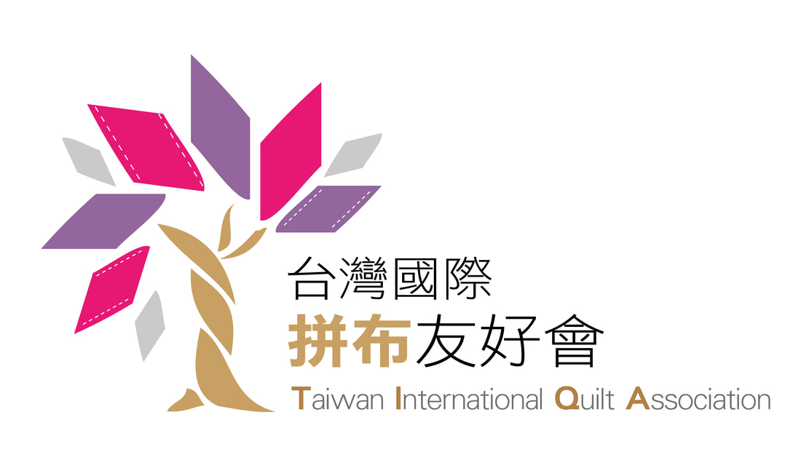

展出時間
2021/11/12（五）－11/14（日），共計三日
About the Event
2021 友好拼布手作節
Origins
「拼布」在過去，是婦女在忙家務之餘為家人所製作以禦寒的被子， 其中融入了豐厚的情感寄託。每一次使用，都為被子寫下一段令人動容的故事； 當被子一代代傳承下來，也承載了豐富的情感與記憶。
發展至今，拼布被已從過去的實際使用， 部分轉化為懸掛於牆上的壁飾。 當觀看方式逐漸從身體實際使用的觸覺， 轉換為牆上的視覺欣賞時， 拼布也逐漸由實用性質轉化為藝術作品。
能一次將多件藝術作品呈現在大眾眼中並不容易， 除了需要熱誠投入的團隊、專業拼布師資與熱心廠家的支持， 也需要足夠且適合的場地，才能集合這些優秀作品。
在大家共同努力下，台灣國際拼布友好會於 2019 年完成一次國際性拼布大展及比賽活動。 除了營造熱絡的展覽氣氛，也透過拼布比賽逐步提升創作水準， 並邀請國外創作者來台參展，讓國內創作者有更多與國際接軌的機會。
憑藉 2019 年的成果，2021 年再次舉辦第二屆國際拼布大展暨比賽活動， 除了延續活動熱度，也期待提升台灣拼布的創作水平， 讓更多創作者有機會站上國際舞台。
Goals
藉由此次活動，希望提供拼布創作者一個展現的舞台， 透過國外作品邀展擴充國內拼布創作者的視野， 並邀請國內專業拼布教師及廠家共同參與。
期望讓這份源於母親的藝術更加活絡， 並進一步創造其藝術與經濟上的價值。
Event Information
2021/11/12（五）－11/14（日），共計三日
台北市信義區松山文創園區 1 號倉庫
台灣國際拼布友好會
臺灣喜佳股份有限公司
Organizations
Organizer

Co-organizer
Sponsor

Program
透過競賽與表揚，鼓勵創作交流與作品品質提升。
結合教學與分享，讓參與者從展覽延伸至實際交流與學習。
2019 Memories
2021 活動延續 2019 年的成果與經驗， 原活動頁亦保留多張 2019 展場與市集照片作為回顧。

點擊圖片返回 2021 友好拼布手作節